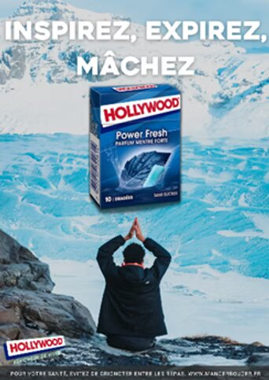
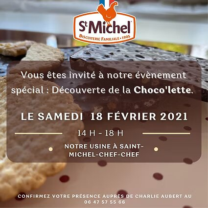
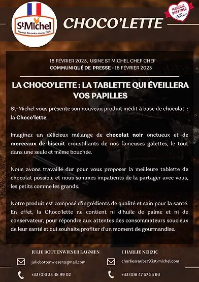
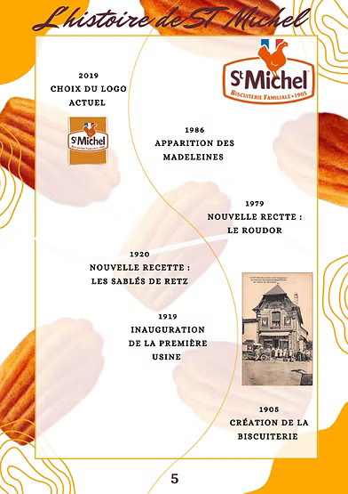
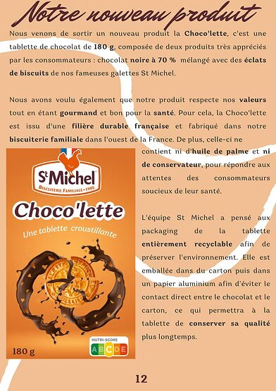
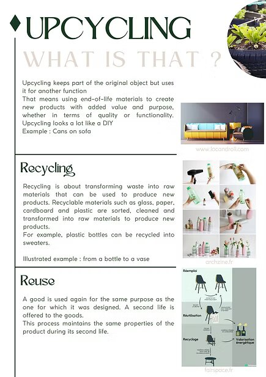
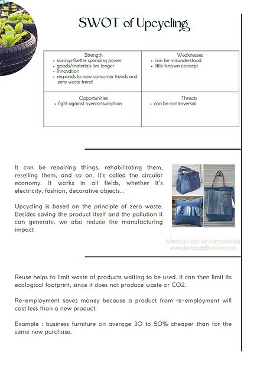

Structurer un plan de communication
Dans le cadre de notre projet de SAE communication, nous avons formé un groupe de quatre étudiants chargé de créer une affiche publicitaire pour la marque Hollywood chewing-gum. Notre objectif était de véhiculer l'image d'un produit essentiel au quotidien, en mettant en avant ses qualités rafraîchissantes et relaxantes. Nous avons ciblé principalement les personnes âgées de 15 à 40 ans, en nous concentrant spécifiquement sur les saveurs menthe et chlorophylle, et en incluant sur notre affiche le packshot, le logo, le slogan et la mention légale. Nous avons également créé une agence et son logo pour ce projet. Pour respecter les règles de réalisation de l'affiche, nous avons organisé des séances de brainstorming au début et à la fin de chaque cours, afin de rassembler les éléments déjà réalisés et de définir les objectifs pour la séance en cours ou la prochaine. De plus, nous avons fait appel à nos connaissances en droit pour nous assurer de respecter les droits à l'image dans notre publicité.
Par la suite, je me suis chargée d’analyser les méthodes de communication des affiches publicitaires et vidéos publicitaire d’Hollywood chewing-gum. J’ai ensuite procédée à l’analyse de ses principaux concurrents : Freedent, Airwaves et Mentos. Notre affiche visait à susciter à la fois un désir d'achat (conatif) et une connexion émotionnelle (affectif) en mettant en avant l'aspect indispensable et plaisant de notre produit, conçu pour offrir un moment agréable et revigorant au quotidien. J'ai pris l'initiative de rechercher une image libre de droits correspondant aux attentes définies en groupe. Comme illustré dans l'affiche finale ci-dessous, j'ai opté pour une image évoquant la fraîcheur, représentée par un glacier au sommet d'une montagne. Cette image met également en scène un homme pratiquant le yoga, soulignant ainsi le côté relaxant associé à notre produit. Voici les critères principaux de notre SAE
Et voici ci-dessous l'affiche finale :

Au cours de cette année, j'ai eu l'occasion de proposer divers supports de communication supplémentaires. Par exemple, j'ai conçu une invitation pour notre deuxième SAE afin de promouvoir le lancement de notre nouveau produit et de l'événement que nous avons organisé à cet effet, en collaboration avec mon équipe. J'ai également rédigé et créé le design potentiel d'un e-mail visant à promouvoir en exclusivité le lancement de notre nouveau produit. De plus, j'ai contribuée à la réalisation, avec mon équipe, d'un dossier de presse sur l'entreprise St-Michel pour notre deuxième SAE. Ci-dessous, vous trouverez les résultats de ces deux projets ainsi que quelques exemples visuels de ce que j'ai inclus dans mon dossier de presse :
   
Dans le cadre de mon projet transverse se nommant "BIP", je me suis retrouvée dans un groupe constitué de personne provenant de différents pays. Nous devions donc tous communiquer par l'anglais et réaliser des travaux sur l'architecture et sur l'Upcycling. Pour ma part, j'ai réalisé une affiche en format A3 afin d'expliquer le concept d'upcycling et de la différence avec le recyclage et la réutilisation.
 